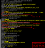

| Quick links: DOWNLOAD | CHANGELOG |
Page contents:
What is sedsed?
- One line Description
- Sedsed debug/indent/tokenize/HTMLize SED scripts.
- Cut-and-Paste friendly Description
- Sedsed is a Python script that masters SED scripts. It generates SED debug files in SED, which lets you debug scripts with your own version of SED (Linux, DOS, etc.). It's also a script beautifier, doing indentation and spaces/comments formatting. It can also convert SED scripts to colorful HTML files. It's GPL.
- Why Use it
- With sedsed you can master ANY sed script. Seeing how the data flow between the commands, you can correct bugs or make improvements very fast. Sometimes to "wonder" what's on SED's buffers is the most difficult part of composing complex SED scripts. Sedsed show them for you!
Gimme a Quick Sample!
| The Quick Sample |
|---|
 |
- The
-doption turns debug ON - The
--hide=holdoptions hides the HOLD SPACE buffer contents, because it is always empty on this example. - The
PATT:lines on sedsed's output shows the PATTERN SPACE buffer contents - The
COMM:yellow lines show the command which is being executed - The
userandotheruserlines are the SED's normal output - The
$sign at the end ofPATT:lines represent the end of the buffer
I Want Another Sample!
| The Indent Sample |
|---|
 |
- The
-foption reads the SED script from a file (just like in SED) - The
--indentoption reformats complicated SED scripts into beautiful human-friendly scripts
| The Debug Sample |
|---|
 |
- The
-doption turns debug ON - The
HOLD:lines shows the HOLD SPACE buffer contents - See how the PATTERN and HOLD SPACE buffers change between the SED commands
- See the buffers swap with the
xcommand - See the
\nthat is inserted in PATTERN SPACE between the two lines joined by theGcommand - See SED under the curtains!
And What About That "HTMLize" Thing?
Besides indent and debug, sedsed also has the ability to convert your
SED scripts to nice HTML pages, with the syntax highlighted just as in
Vim Editor, with nice colors! To HTMLize the previous
email-linker.sed script, we do:
prompt$ sedsed --htmlize -f email-linker.sed > email-linker.sed.html
Hey, I liked it! How do I get it?
Just download this file: sedsed-1.0
- Sedsed is just a single Python script.
- It uses only the default Python modules.
- It works in all Python versions, from 1.5.2 to the latest.
- No libraries or external files are required.
- No compilation needed.
- Just download and run.
Note 1: The Python interpreter is installed by default on Linux and MacOS X systems. If you are on Windows or other systems, check if you have it installed. If not, you can download it from www.python.org/download/, it is quick and safe.
Okay, got it. Now what?
See the friendly help screen with all the available options and try it on your own SED scripts!
prompt$ sedsed --help
usage: sedsed OPTION [-e sedscript] [-f sedscriptfile] [inputfile]
OPTIONS:
-f, --file add file contents to the commands to be parsed
-e, --expression add the script to the commands to be parsed
-n, --quiet suppress automatic printing of pattern space
--silent alias to --quiet
-d, --debug debug the sed script
--hide hide some debug info (options: PATT,HOLD,COMM)
--color shows debug output in colors (default: ON)
--nocolor no colors on debug output
--dump-debug dumps to screen the debugged sed script
--emu emulates GNU sed (INCOMPLETE)
--emudebug emulates GNU sed debugging the sed script (INCOMPLETE)
-i, --indent script beautifier, prints indented and
one-command-per-line output do STDOUT
--prefix indent prefix string (default: 4 spaces)
-t, --tokenize script tokenizer, prints extensive
command by command information
-H, --htmlize converts sed script to a colorful HTML page
How Trustable the Debugger Is?
Sedsed was tested successfuly against all the 5 stars (*****) extreme
SED scripts from the
Bonzini's excellent grab-bag site.
So all the sed commands and structures wrote on these scripts, which
are EXTREME, are correctly parsed.
If you want to try at home, download them from the grab-bag's site and execute this way:
echo -e "one\ntwo\nthree\nfour" | sedsed -d -f sodelnum.sed
echo -e "one\ntwo\nthree\nfour" | sedsed -d -f sort.sed
echo a{b{c{bla}}} | sedsed -d -f tex2xml.sed
echo "aa='abc" | sedsed -d -f config.sed
(date +'%w %d' ; date +'%-m %Y') | sedsed -d -f cal.sed
And now, calm down, close your eyes, deep breath: DC.SED!!!
echo 4 4 + p | sedsed -d -f dc.sed
Don't believe? See it for yourself! .
{kind=link}
What's New On The Latest Version?
Version 1.0, released on 2004-12-09
From 0.8 to 1.0?
This release should be 0.9 because the last one was 0.8, from one year ago. But there are so many nice changes, including performance gain and portability, that the program deserves a 1.0 version. One year is so much time, but the wait resulted in a quality jump in sedsed.
Debug Faster and Diet!
The debug action was the most changed. Now sedsed generates "diet" debug scripts, reducing around 40% of the file size* compared to the previous version. With less commands on the debug file and an important simplification on the debug commands, the debugged sed script now executes faster.
* In scripts that use the "t" command.
Works in Your Old Buggy SED
Other changes on the debug action aimed portability. The syntax of the debug commands now is very conservative. If the previous version of sedsed did not work in your old UNIX sed, try this one!
The full list of changes:
- Now the SED program location on the system is configurable inside the script (if needed).
- The default indent prefix for --indent has changed from two to four spaces.
- Huge changes to make the debug file portable, so now it works even in old UNIX versions of sed (thanks Gudermez for requesting and Laurent Voguel for his sedcheck tool).
- The debug command to show the current sed command was simplified from "s///;P;s///" to a single "i" command, reducing the debug file size and increasing execution speed (thanks Thobias Salazar Trevisan for the idea).
- Added --dump-debug option to inspect the generated debug file (implies --nocolor and --debug).
- Generated debug file more readable, with indented debug commands.
- Bugfix: Now parses a, c, i commands with ";" on the text (thanks Leo Mulders for reporting).
Older versions history:
- v0.8 2003-11-15
-
- Huge code cleanup and rearrange, now it is readable
- Added -n option and its aliases --quiet/--silent (thanks Eric Pement)
- Added -H option as an alias to --htmlize
- Now accepts sed script on STDIN (like sed):
echo p | sed -f - file - Changed internal line separator string to ASCII chars (thanks Thobias Salazar)
- Bugfix: Script previous checking was broken (thanks Eric Pement)
- v0.7 2003-01-21
-
- Added --color option (for Windows users)
- Bugfix: Debug file line break on Windows (thanks Eric Pement)
- v0.6 2002-11-19
-
- Now sedsed works on Windows/DOS
- New stand-alone .EXE version for Windows users (by py2exe)
- Option -v REALLY changed to -V (lamer...)
- v0.5 2002-05-08
-
- The sedsed program is now compatible with old Python v1.5
- The sed debug file is now temporary (is removed)
- Option -v changed to -V
- Added "i" flag for "s///" command
- Data and parameters are passed as in GNU sed:
- Input text: pipeline (STDIN) and/or file(s)
- Sed script: -f <file> and/or -e <script> options
- v0.4 2002-03-27
-
- Added --htmlize option
- v0.3 2002-02-22
-
- Added --version option
- Added documentation
- Added i386 binary version
- v0.2 2001-12-22
-
- Status of "t" command preserved correctly (thanks Paolo Bonzini)
- v0.1 2001-12-21
-
- First release on sed-users list
Sedsed Reference Card
| Sedsed Output | |
|---|---|
PATT: |
Contents of the PATTERN SPACE buffer |
HOLD: |
Contents of the HOLD SPACE buffer |
COMM: |
The SED command being executed |
$ |
Terminates the PATT and HOLD contents |
... |
Lines that don't begin with any identifiers are STDOUT |
| Action Options | |
--debug |
DEBUG the sed script |
--indent |
Script beautifier, show indented source |
--tokenize |
Script tokenizer, show info about each command |
--htmlize |
Converts sed script to a colorful HTML page |
| Tips | |
! |
less -r is your friend to page the colorful output of -d |
! |
Use the --hide option to a cleaner debug output |
! |
--htmlize send results to STDOUT, so redirect it |
See Also
- When debugging a SED script, sedsed shows the buffers contents between all commands, having no support for user-defined spypoints. If you want this feature, you should try "sd", the spypoint-aware SED debugger written in shell script by Brian Hiles.
- Want to write portable scripts that will work on a wide range of SED flavors out there? Use the Laurent Voguel's "sedcheck" tool (it is a SED script!)
- Want to learn more about SED? Visit the "SED Homepage", that has lots of documents and sample scripts.
Other Aurelio's Software at http://aurelio.net/projects

|


(see source) |